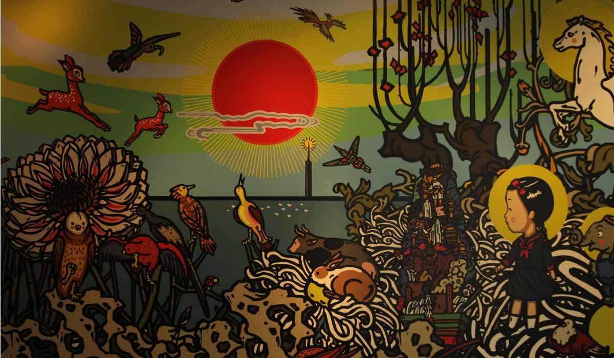
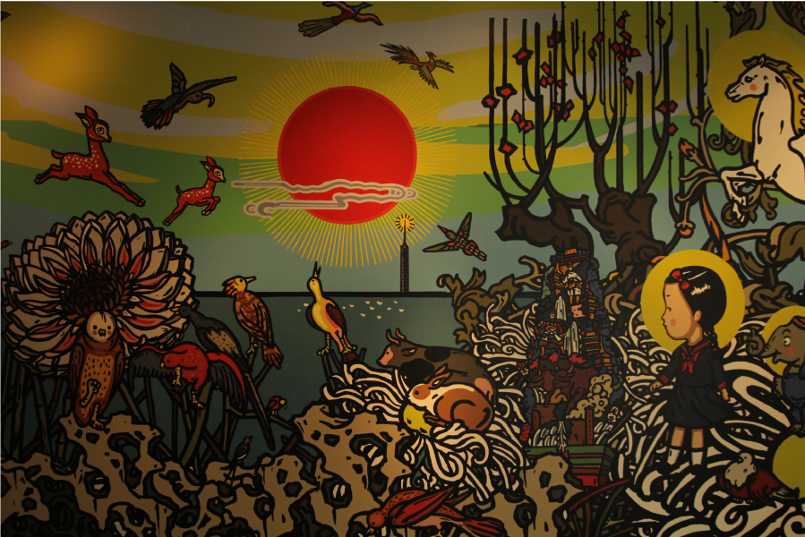
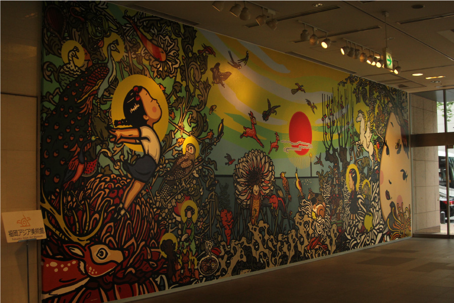
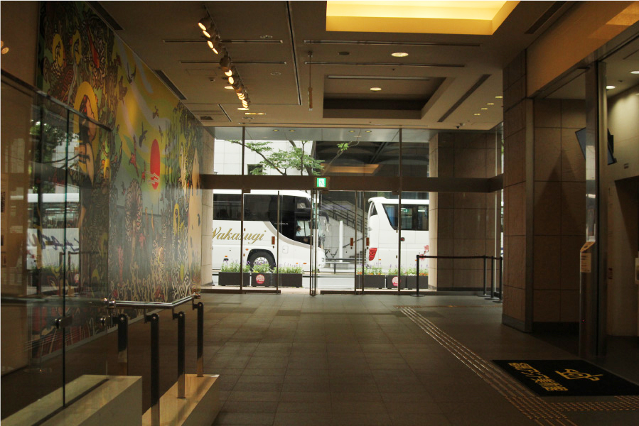

ブー・ホァ(卜樺)
  
中国・北京在住のアーティスト、ブー・ホァ(卜樺)氏。この作品は、約4×11メートルの壁画で、
2018年に福岡在住の学生、アーティストの総勢24名の共同制作によって完成された。博多リバレイン
一階のエレベーター・フロアに設置され、福岡アジア美術館に行く際は必ず目にするだろう。
壁画には山笠や明太子、ラーメン、福岡タワーなど福岡に由来したイラストが散りばめられている。
作品を鑑賞される際には是非探して頂きたい。